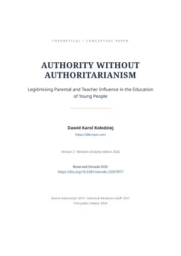

← Wróć do publikacji
Edukacja / Opracowanie badawcze
Autorytet bez autorytaryzmu: legitymizacja wpływu rodziców i nauczycieli w wychowaniu młodzieży
Working paper o autorytecie wychowawczym i uzasadnionym wpływie
Working paper poświęcony temu, jak rodzice i nauczyciele mogą wywierać uzasadniony wpływ wychowawczy bez odwoływania się do autorytaryzmu.
Rok2026
RodzajOpracowanie badawcze
TematykaEdukacja
STATUSOpublikowano
